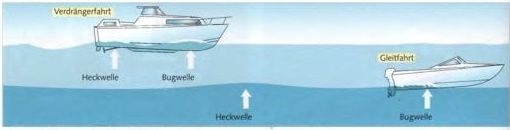
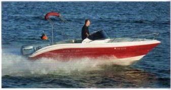
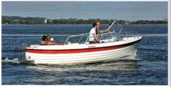
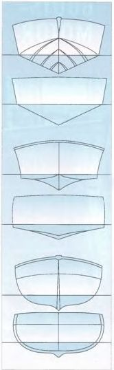

Es gibt im Motorbootbau zwei grundsätzliche Konstruktionsprinzipien: den schnellen über die Wasseroberfläche dahingleitenden Gleiter und den langsamen durchs Wasser pflügenden Verdränger.

Gleiter: springt in schneller Fahrt über die Wellen.

Verdränger: langsam, aber sparsam im Verbrauch.
Jedes Schiff hat eine rechnerisch zu ermittelnde Rumpf- oder Grenzgeschwindigkeit. Sie ergibt sich aus der Länge der Wasserlinie (LWL). Man rechnet:
► Wurzel aus der Wasserlinienlänge in Metern × 4,5 = Geschwindigkeit in Stundenkilometern (km/h).
Beispiel: LWL 5 m; 10 km/h
► Wurzel aus der Wasserlinienlänge in Metern × 2,43 = Geschwindigkeit in Knoten (kn) = Seemeilen pro Stunde.
Beispiel: LWL 5 m; 5,5 kn
Der Rumpf liegt dann in einem ausgeprägten Wellental, eingebettet zwischen Bug- und Heckwelle. Mehr Antriebskraft durch stärkere Motorisierung macht das Boot nicht schneller. Sie erzeugt nur eine höhere Heckwelle, an der sich das Heck festsaugt, und ein tieferes Wellental.
Man spricht in diesem Fall von einem Verdränger und Verdrängerfahrt. Das Boot verdrängt eine Wassermenge, deren Gewicht gleich seinem eigenen Gewicht ist.
Verdränger haben eine mehr oder minder runde Bodenform und oft ein rundes Heck. Sie sind meist mit Innenbordern ausgerüstet.
► Vorteile des Verdrängers: Er kann seine Höchstgeschwindigkeit mit einer geringen Motorisierung erreichen und ist dementsprechend sparsam im Verbrauch. Er läuft in rauem Wasser weicher als ein Gleitboot.
Leichte Boote hingegen mit einer entsprechend ausgelegten Bodenform und einem sogenannten Abrissheck können ihrem Wellensystem entrinnen. Zwar macht sich auch bei ihnen ein erhöhter Widerstand bemerkbar, wenn sie ihre Rumpfgeschwindigkeit erreichen, aber sie überwinden diesen kritischen Punkt. Sie schieben sich auf ihre Bugwelle und lassen ihre Heckwelle hinter sich. Sie gleiten. Je weiter die Heckwelle achteraus wandert, umso höher ist die Gleitfahrt. Ermöglicht wird sie durch einen teilweise dynamischen Auftrieb unter dem Bootsboden, der den Bug trägt. Ein Boot in Gleitfahrt wirkt also leichter, es verdrängt weniger Wasser als seinem Gewicht entspricht. Deshalb verursacht ein Gleitboot in Gleitfahrt auch nur einen geringen Wellenschlag. Gleichzeitig verringert sich die vom Wasser benetzte Rumpffläche und damit der Reibungswiderstand.
► Ein Gleitboot kann ein Mehrfaches seiner Rumpfgeschwindigkeit erzielen. Je leichter das Boot im Verhältnis zu seiner Motorisierung ist, umso schneller kommt es in Gleitfahrt.
► Nachteile des Gleiters: Bei rauem Wasser schlägt er ziemlich hart, sodass die Geschwindigkeit kaum oder gar nicht ausgefahren werden kann. Er braucht eine starke Motorisierung mit entsprechend hohem Brennstoffverbrauch.
Halbgleiter sind Boote mit einem zum Gleiten ausgelegten Boden. Sie sind aber zu schwer, um von ihrer Motorisierung ins Gleiten gebracht werden zu können: zwischen 22 und 41 kg/kW (16 und 30 kg/PS). Da sich unter ihrem Boden aber noch ein merklicher Staudruck aufbaut, der das Boot etwas aus dem Wasser hebt und so den Wellen verursachenden Widerstand verkleinert, laufen sie mehr als ihre Rumpfgeschwindigkeit. Alle schnellen Motorkreuzer von etwa 9 m Länge an aufwärts sind als Halbgleiter ausgelegt. Boote über 18 m jedoch werden überwiegend als Verdränger gebaut.

Tiefer V-Boden – charakteristisch das bis hinten durchlaufende „V". Typisch für seetüchtige Kajütboote. Weicherer Lauf in Rauwasser, aber wegen der größeren benetzten Bodenfläche nur mit stärkerer Motorisierung ins Gleiten zu bringen.
Gemäßigter V-Boden – läuft zum Heck ziemlich flach aus. Hauptsächlich Außenborderboote. Gleitet leichter, läuft aber härter in rauem Wasser.
Rundspant-Boden – kommt nicht ins Gleiten, erreicht aber mit relativ schwacher Motorisierung seine Rumpf- oder Höchstgeschwindigkeit. Typische Bodenform aller Verdränger.